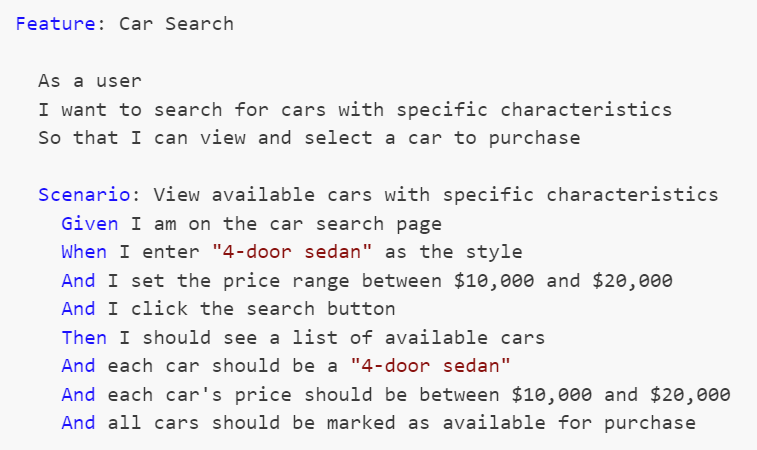

Code Coverage - The Essential Tool That Must Never Be Measured
Posted by bsstahl on 2024-09-14 and Filed Under: development
TLDR: Code Coverage is the Wrong Target
Code coverage metrics HURT code quality, especially when gating deployments, because they are a misleading target, prioritizing superficial benchmarks over meaningful use-case validation. A focus on achieving coverage percentages detracts from real quality assurance, as developers write tests that do what the targets insist that they do, satisfy coverage metrics rather than ensuring comprehensive use-case functionality.
When we measure code coverage instead of use-case coverage, we limit the value of the Code Coverage tools for the developer going forward as a means of identifying areas of concern within the code. If instead we implement the means to measure use-case coverage, perhaps using Cucumber/SpecFlow BDD tools, such metrics might become a valuable target for automation. Short of that, test coverage metrics and gates actually hurt quality rather than helping it.
- Do Not use code coverage as a metric, especially as a gate for software deployment.
- Do use BDD style tests to determine and measure the quality of software.
What is Code Coverage?
Code coverage measures the extent to which the source code of a program has been executed during the testing process. It is a valuable tool for developers to identify gaps in unit tests and ensure that their code is thoroughly tested. An example of the output of the Code Coverage tools in Visual Studio Enterprise from my 2015 article Remove Any Code Your Users Don't Care About can be seen below. In this example, the code path where the property setter was called with the same value the property already held, was not tested, as indicated by the red highlighting, while all other blocks in this code snippet were exercised by the tests as seen by the blue highlighting.

When utilized during the development process, Code Coverage tools can:
Identify areas of the codebase that haven't been tested, allowing developers to write additional tests to ensure all parts of the application function as expected.
Improve understanding of the tests by identifying what code is run during which tests.
Identify areas of misunderstanding, where the code is not behaving as expected, by visually exposing what code is executed during testing.
Focus testing efforts on critical or complex code paths that are missing coverage, ensuring that crucial parts of the application are robustly tested.
Identify extraneous code that is not executed during testing, allowing developers to remove unnecessary code and improve the maintainability of the application.
Maximize the value of Test-Driven Development (TDD) by providing immediate feedback on the quality of tests, including the ability for a developer to quickly see when they have skipped ahead in the process by creating untested paths.
All of these serve to increase trust in our unit tests, allowing the developers the confidence to "refactor ruthlessly" when necessary to improve the maintainability and reliability of our applications. However, they also depend on one critical factor, that when an area shows in the tooling as covered, the tests that cover it do a good job of guaranteeing that the needs of the users are met by that code. An area of code that is covered, but where the tests do not implement the use-cases that are important to the users, is not well-tested code. Unfortunately, this is exactly what happens when we use code coverage as a metric.
The Pitfalls of Coverage as a Metric
A common misunderstanding in our industry is that higher code coverage equates to greater software quality. This belief can lead to the idea of using code coverage as a metric in attempts to improve quality. Unfortunately, this well-intentioned miscalculation generally has the opposite effect, a reduction in code quality and test confidence.
Goodhart's Law
Goodhart's Law states that "When a measure becomes a target, it ceases to be a good measure." We have seen this principle play out in many areas of society, including education (teaching to the test), healthcare (focus on throughput rather than patient outcomes), and social media (engagement over truth).
This principle is particularly relevant when it comes to code coverage metrics. When code coverage is used as a metric, developers will do as the metrics demand and produce high coverage numbers. Usually this means writing one high-quality test for the "happy path" in each area of the code, since this creates the highest percentage of coverage in the shortest amount of time. It should be clear that these are often good, valuable tests, but they are not nearly the only tests that need to be written.
Problems as outlined in Goodhart's Law occur because a metric is nearly always a proxy for the real goal. In the case of code coverage, the goal is to ensure that the software behaves as expected in all use-cases. The metric, however, is a measure of how many lines of code have been executed by the tests. This is unfortunately NOT a good proxy for the real goal, and is not likely to help our quality, especially in the long-run. Attempting to use Code Coverage in this way is akin to measuring developer productivity based on the number of lines of code they create -- it is simply a bad metric.
A Better Metric
If we want to determine the quality of our tests, we need to measure the coverage of our use-cases, not our code. This is more difficult to measure than code coverage, but it is a much better proxy for the real goal of testing. If we can measure how well our code satisfies the needs of the users, we can be much more confident that our tests are doing what they are supposed to do -- ensuring that the software behaves as expected in all cases.
The best tools we have today to measure use-case coverage are Behavior Driven Development tools like Cucumber, for which the .NET implementation is called SpecFlow. These tools test how well our software meets the user's needs by helping us create test that focus on how the users will utilize our software. This is a much better proxy for the real goal of testing, and is much more likely to help us achieve our quality goals.
The formal language used to describe these use-cases is called Gherkin, and uses a Given-When-Then construction. An example of one such use-case test for a simple car search scenario might look like this:

These Gherkin scenarios, often created by analysts, are translated into executable tests using step definitions. Each Gherkin step (Given, When, Then) corresponds to a method in a step definition file created by a developer, where annotations or attributes bind these steps to the code that performs the actions or checks described. This setup allows the BDD tool to execute the methods during test runs, directly interacting with the application and ensuring that its behavior aligns with defined requirements.
Since these tests exercise the areas of the code that are important to the users, coverage metrics here are a much better proxy for the real goal of testing, because they are testing the use-cases that are important to the users. If an area of code is untested by BDD style tests, that code is either unnecessary or we are missing use-cases in our tests.
Empowering Developers: Code Coverage Tools, Visualization, and Use Case Coverage
One of the most powerful aspects of code coverage tools are their data visualizations, allowing developers to assess which lines of code have been tested and which have not, right inside the code in the development environment. This visualization transcends the mere percentage or number of lines covered, adding significant value to the development process and enabling developers to make informed decisions about where to focus their testing efforts.
By permitting developers to utilize code coverage tools and visualization without turning them into a metric, we can foster enhanced software quality and more comprehensive testing. By granting developers the freedom to use these tools and visualize their code coverage, they can better identify gaps in their testing and concentrate on covering the most critical use cases. If instead of worrying about how many lines of code are covered, we focus on what use-cases are covered, we create better software by ensuring that the most important aspects of the application are thoroughly tested and reliable.
Creating an Environment that Supports Quality Development Practices
Good unit tests that accurately expose failures in our code are critical for the long-term success of development teams. As a result, it is often tempting to jump on metrics like code coverage to encourage developers to "do the right thing" when building software. Unfortunately, this seemingly simple solution is almost always the wrong approach.
Encourage Good Testing Practices without Using Code Coverage Metrics
So how do we go about encouraging developers to build unit tests that are valuable and reliable without using code coverage metrics? The answer is that we don't. A culture of quality development practices is built on trust, not metrics. We must trust our developers to do the right thing, and create an environment where they are empowered to do the job well rather than one that forces them to write tests to satisfy a metric.
Developers want to excel at their jobs, and never want to create bugs. No matter how much of a "no blame" culture we have, or how much we encourage them to "move fast and break things", developers will always take pride in their work and want to create quality software. Good tests that exercise the code in ways that are important to the users are a critical part of that culture of quality that we all want. We don't need to force developers to write these tests, we just need to give them the tools and the environment in which to do so.
There are a number of ways we can identify when this culture is not yet in place. Be on the lookout for any of these signs:
- Areas of code where, every time something needs to change, the developers first feel it necessary to write a few dozen tests so that they have the confidence to make the change, or where changes take longer and are more error-prone because developers can't be confident in the code they are modifying.
- Frequent bugs or failures in areas of the code that represent key user scenarios. This suggests that tests may have been written to create code coverage rather than to exercise the important use-cases.
- A developer whose code nobody else wants to touch because it rarely has tests that adequately exercise the important features.
- Regression failures where previous bugs are reintroduced, or exposed in new ways, because the early failures were not first covered by unit tests before fixing them.
The vast majority of developers want to do their work in an environment where they don't have to worry when asked to making changes to their teammates' code because they know it is well tested. They also don't want to put their teammates in situations where they are likely to fail because they had to make a change when they didn't have the confidence to do so, or where that confidence was misplaced. Nobody wants to let a good team down. It is up to us to create an environment where that is possible.
Conclusion: Code Coverage is a Developer's Tool, Not a Metric
Code coverage is an invaluable tool for developers, but it should not be misused as a superficial metric. By shifting our focus from the number of code blocks covered to empowering developers with the right tools and environment, we can ensure software quality through proper use-case coverage. We must allow developers to utilize these valuable tools, without diluting their value by using them as metrics.